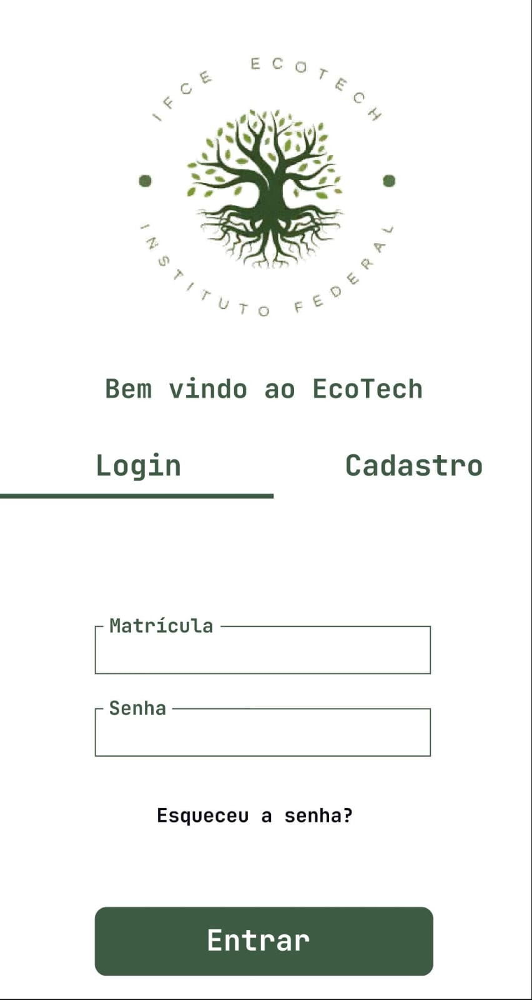
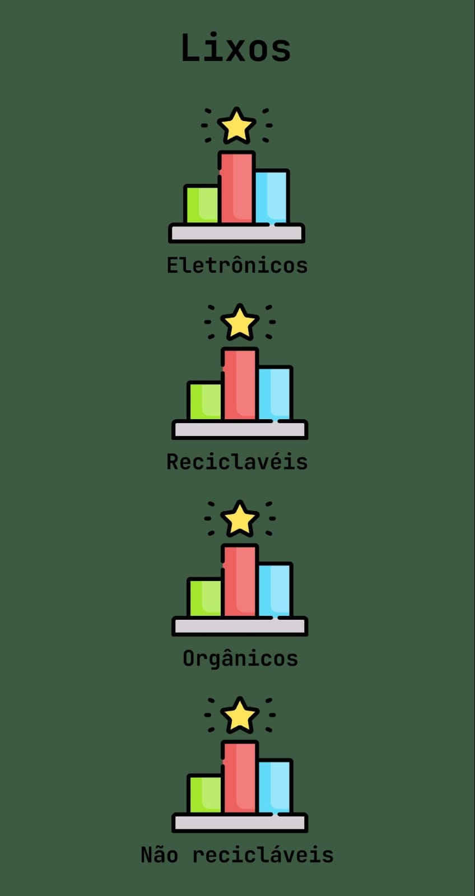

O projeto tem como objetivo principal incentivar o descarte consciente de resíduos eletrônicos no ambiente escolar, tornando esse hábito parte da rotina dos estudantes e contribuindo para um espaço mais limpo e sustentável. A proposta também busca melhorar a forma como o lixo é tratado dentro da instituição e aumentar o engajamento dos alunos com temas relacionados ao meio ambiente. Para isso, foi desenvolvido o aplicativo mobile “IFCE Ecotech”, uma ferramenta que facilita o processo de descarte e torna o acesso às informações mais simples e acessível para os usuários. O aplicativo surgiu como resposta ao problema do descarte inadequado de resíduos na escola e apresenta uma solução tecnológica eficiente que não apenas permite a localização dos pontos de coleta seletiva, mas também promove a conscientização ambiental entre os estudantes. Além disso, o sistema conta com recompensas, tornando a proposta mais atrativa, inovadora e motivadora para os alunos do IFCE.

👤 Login & Cadastro

🕮 Menu Principal
